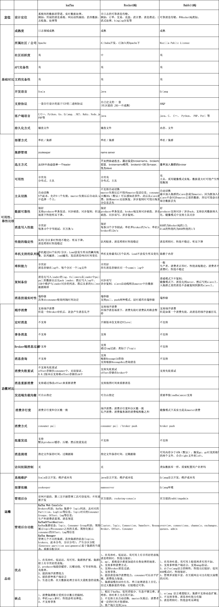
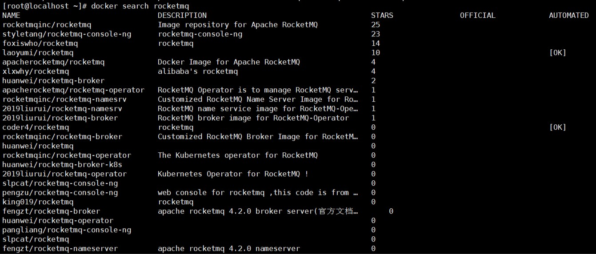
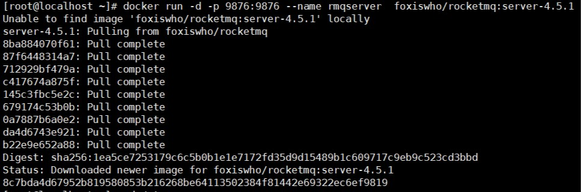
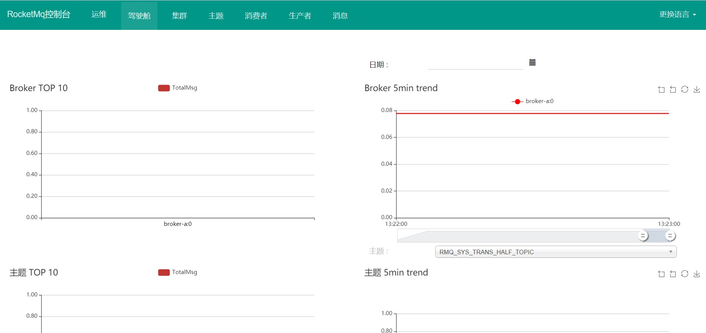
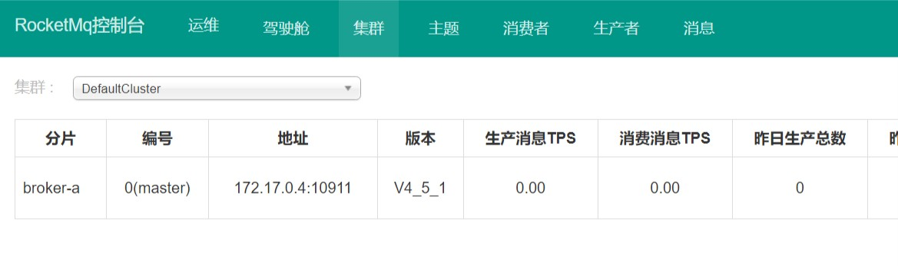
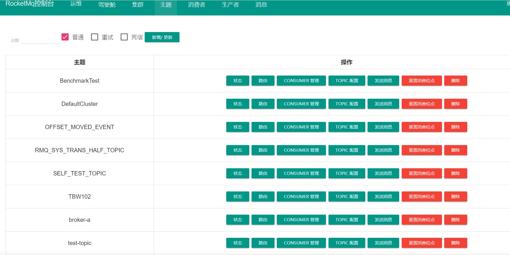
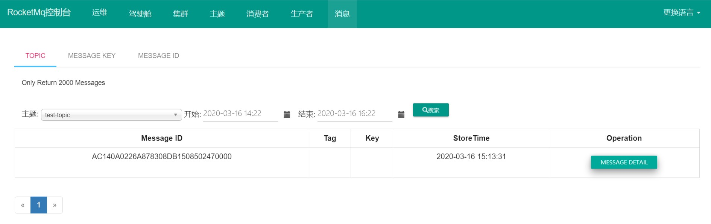
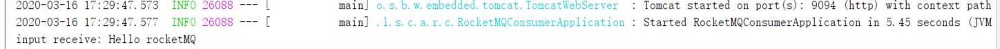

Message Queue（MQ），消息队列中间件。很多人都说：MQ 通过将消息的发送和接收分离来实现应用程序的异步和解偶，这个给人的直觉是——MQ 是异步的，用来解耦的，但是这个只是 MQ 的效果而不是目的。MQ 真正的目的是为了通讯，屏蔽底层复杂的通讯协议，定义了一套应用层的、更加简单的通讯协议。一个分布式系统中两个模块之间通讯要么是 HTTP，要么是自己开发的 TCP，但是这两种协议其实都是原始的协议。HTTP 协议很难实现两端通讯——模块 A 可以调用 B，B 也可以主动调用 A，如果要做到这个两端都要背上 WebServer，而且还不支持长连接（HTTP 2.0 的库根本找不到）。TCP 就更加原始了，粘包、心跳、私有的协议，想一想头皮就发麻。MQ 所要做的就是在这些协议之上构建一个简单的“协议”——生产者/消费者模型。MQ 带给我的“协议”不是具体的通讯协议，而是更高层次通讯模型。它定义了两个对象——发送数据的叫生产者；接收数据的叫消费者， 提供一个 SDK 让我们可以定义自己的生产者和消费者实现消息通讯而无视底层通讯协议。
这个流派通常有一台服务器作为 Broker，所有的消息都通过它中转。生产者把消息发送给它就结束自己的任务了，Broker 则把消息主动推送给消费者（或者消费者主动轮询）
kafka、JMS（ActiveMQ）就属于这个流派，生产者会发送 key 和数据到 Broker，由 Broker 比较 key 之后决定给哪个消费者。这种模式是我们最常见的模式，是我们对 MQ 最多的印象。在这种模式下一个 topic 往往是一个比较大的概念，甚至一个系统中就可能只有一个 topic，topic 某种意义上就是 queue，生产者发送 key 相当于说：“hi，把数据放到 key 的队列中” 。
如上图所示，Broker 定义了三个队列，key1，key2，key3，生产者发送数据的时候会发送 key1 和 data，Broker 在推送数据的时候则推送 data（也可能把 key 带上）。
虽然架构一样但是 kafka 的性能要比 jms 的性能不知道高到多少倍，所以基本这种类型的 MQ 只有 kafka 一种备选方案。如果你需要一条暴力的数据流（在乎性能而非灵活性）那么 kafka 是最好的选择。
这种的代表是 RabbitMQ（或者说是 AMQP）。生产者发送 key 和数据，消费者定义订阅的队列，Broker 收到数据之后会通过一定的逻辑计算出 key 对应的队列，然后把数据交给队列。
这种模式下解耦了 key 和 queue，在这种架构中 queue 是非常轻量级的（在 RabbitMQ 中它的上限取决于你的内存），消费者关心的只是自己的 queue；生产者不必关心数据最终给谁只要指定 key 就行了，中间的那层映射在 AMQP 中叫 exchange（交换机）。
AMQP 中有四种 exchange
Direct exchange：key 就等于 queue
Fanout exchange：无视 key，给所有的 queue 都来一份
Topic exchange：key 可以用“宽字符”模糊匹配 queue
Headers exchange：无视 key，通过查看消息的头部元数据来决定发给那个 queue（AMQP 头部元数据非常丰富而且可以自定义）
这种结构的架构给通讯带来了很大的灵活性，我们能想到的通讯方式都可以用这四种 exchange 表达出来。如果你需要一个企业数据总线（在乎灵活性）那么 RabbitMQ 绝对的值得一用。
无 Broker 的 MQ 的代表是 ZeroMQ。该作者非常睿智，他非常敏锐的意识到——MQ 是更高级的 Socket，它是解决通讯问题的。所以 ZeroMQ 被设计成了一个“库”而不是一个中间件，这种实现也可以达到——没有 Broker 的目的。
节点之间通讯的消息都是发送到彼此的队列中，每个节点都既是生产者又是消费者。ZeroMQ 做的事情就是封装出一套类似于 Socket 的 API 可以完成发送数据，读取数据
ZeroMQ 其实就是一个跨语言的、重量级的 Actor 模型邮箱库。你可以把自己的程序想象成一个 Actor，ZeroMQ 就是提供邮箱功能的库；ZeroMQ 可以实现同一台机器的 RPC 通讯也可以实现不同机器的 TCP、UDP 通讯，如果你需要一个强大的、灵活、野蛮的通讯能力，别犹豫 ZeroMQ。
Queue： 一个发布者发布消息，下面的接收者按队列顺序接收，比如发布了 10 个消息，两个接收者 A,B 那就是 A,B 总共 会收到 10 条消息，不重复。Topic： 一个发布者发布消息，有两个接收者 A,B 来订阅，那么发布了 10 条消息，A,B 各收到 10 条消息。
类型
Topic
Queue
概要
Publish Subscribe Messaging 发布订阅消息
Point-to-Point 点对点
有无状态
Topic 数据默认不落地，是无状态的。
Queue 数据默认会在 MQ 服务器上以文件形式保存，比如 ActiveMQ 一般保存在 $AMQ_HOME\data\kr-store\data 下面。也可以配置成 DB 存储。
完整性保障
并不保证 Publisher 发布的每条数据，Subscriber 都能接受到。
Queue 保证每条数据都能被 Receiver 接收。
消息是否会丢失
一般来说 Publisher 发布消息到某一个 Topic 时，只有正在监听该 Topic 地址的 Sub 能够接收到消息；如果没有 Sub 在监听，该 Topic 就丢失了。
Sender 发送消息到目标 Queue，Receiver 可以异步接收这个 Queue 上的消息。Queue 上的消息如果暂时没有 Receiver 来取，也不会丢失。
消息发布接收策略
一对多的消息发布接收策略，监听同一个 Topic 地址的多个 Sub 都能收到 Publisher 发送的消息。Sub 接收完通知 MQ 服务器
一对一的消息发布接收策略，一个 Sender 发送的消息，只能有一个 Receiver 接收。Receiver 接收完后，通知 MQ 服务器已接收，MQ 服务器对 Queue 里的消息采取删除或其他操作。
阿里巴巴写的一个MQ，他的前身是activeMQ，RocketMQ是Apache的一个项目，但是写代码的是阿里巴巴。消息队列作为高并发系统的核心组件之一，能够帮助业务系统解构提升开发效率和系统稳定性。主要具有以下优势：
削峰填谷： 主要解决瞬时写压力大于应用服务能力导致消息丢失、系统奔溃等问题
系统解耦： 解决不同重要程度、不同能力级别系统之间依赖导致一死全死
提升性能： 当存在一对多调用时，可以发一条消息给消息系统，让消息系统通知相关系统
蓄流压测： 线上有些链路不好压测，可以通过堆积一定量消息再放开来压测
Apache Alibaba RocketMQ 是一个消息中间件。消息中间件中有两个角色：消息生产者和消息消费者。RocketMQ 里同样有这两个概念，消息生产者负责创建消息并发送到 RocketMQ 服务器，RocketMQ 服务器会将消息持久化到磁盘，消息消费者从 RocketMQ 服务器拉取消息并提交给应用消费。
RocketMQ 是一款分布式、队列模型的消息中间件，具有以下特点：
支持严格的消息顺序
支持 Topic 与 Queue 两种模式
亿级消息堆积能力
比较友好的分布式特性
同时支持 Push 与 Pull 方式消费消息
历经多次天猫双十一海量消息考验
目前主流的 MQ 主要是 RocketMQ、kafka、RabbitMQ，其主要优势有：
支持事务型消息（消息发送和 DB 操作保持两方的最终一致性，RabbitMQ 和 Kafka 不支持）
支持结合 RocketMQ 的多个系统之间数据最终一致性（多方事务，二方事务是前提）
支持 18 个级别的延迟消息（RabbitMQ 和 Kafka 不支持）
支持指定次数和时间间隔的失败消息重发（Kafka 不支持，RabbitMQ 需要手动确认）
支持 Consumer 端 Tag 过滤，减少不必要的网络传输（RabbitMQ 和 Kafka 不支持）
支持重复消费（RabbitMQ 不支持，Kafka 支持）

rocketmq需要三个容器，server、broker和console
简单粗暴，如果你的虚拟机安装了docker-compose，那就很方便了，直接构建服务和容器。
使用docker-compose来直接构建三个所需容器：
1 2 3 4 5 6 7 8 9 10 11 12 13 14 15 16 17 18 19 20 21 22 23 24 25 26 27 28 29 30 31 32 33 34 35 36 37 38 39 40 41 42 43 44 45 46 47 48 49 50 51 52 53 54 55 version: '3.5' services: rmqnamesrv: image: foxiswho/rocketmq:server container_name: rmqnamesrv ports: - 9876 :9876 volumes: - ./data/logs:/opt/logs - ./data/store:/opt/store networks: rmq: aliases: - rmqnamesrv rmqbroker: image: foxiswho/rocketmq:broker container_name: rmqbroker ports: - 10909 :10909 - 10911 :10911 volumes: - ./data/logs:/opt/logs - ./data/store:/opt/store - ./data/brokerconf/broker.conf:/etc/rocketmq/broker.conf environment: NAMESRV_ADDR: "rmqnamesrv:9876" JAVA_OPTS: " -Duser.home=/opt" JAVA_OPT_EXT: "-server -Xms128m -Xmx128m -Xmn128m" command: mqbroker -c /etc/rocketmq/broker.conf depends_on: - rmqnamesrv networks: rmq: aliases: - rmqbroker rmqconsole: image: styletang/rocketmq-console-ng container_name: rmqconsole ports: - 8080 :8080 environment: JAVA_OPTS: "-Drocketmq.namesrv.addr=rmqnamesrv:9876 -Dcom.rocketmq.sendMessageWithVIPChannel=false" depends_on: - rmqnamesrv networks: rmq: aliases: - rmqconsole networks: rmq: name: rmq driver: bridge
RocketMQ Broker 需要一个配置文件，按照上面的 Compose 配置，我们需要在 ./data/brokerconf/ 目录下创建一个名为 broker.conf 的配置文件，内容如下：
1 2 3 4 5 6 7 8 9 10 11 12 13 14 15 16 17 18 19 20 21 22 23 24 25 26 27 28 29 30 31 32 33 34 35 36 37 38 39 40 41 42 43 44 45 46 47 48 49 50 51 52 53 54 55 56 57 58 59 60 61 62 63 64 65 66 67 68 69 70 71 72 73 74 75 76 77 78 79 80 81 82 83 84 85 86 87 88 89 90 91 92 93 94 95 96 # Licensed to the Apache Software Foundation (ASF) under one or more # contributor license agreements. See the NOTICE file distributed with # this work for additional information regarding copyright ownership. # The ASF licenses this file to You under the Apache License, Version 2.0 # (the "License"); you may not use this file except in compliance with # the License. You may obtain a copy of the License at # # http://www.apache.org/licenses/LICENSE-2.0 # # Unless required by applicable law or agreed to in writing, software # distributed under the License is distributed on an "AS IS" BASIS, # WITHOUT WARRANTIES OR CONDITIONS OF ANY KIND, either express or implied. # See the License for the specific language governing permissions and # limitations under the License. # 所属集群名字 brokerClusterName=DefaultCluster # broker 名字，注意此处不同的配置文件填写的不一样，如果在 broker-a.properties 使用: broker-a, # 在 broker-b.properties 使用: broker-b brokerName=broker-a # 0 表示 Master，> 0 表示 Slave brokerId=0 # nameServer地址，分号分割 # namesrvAddr=rocketmq-nameserver1:9876;rocketmq-nameserver2:9876 # 启动IP,如果 docker 报 com.alibaba.rocketmq.remoting.exception.RemotingConnectException: connect to <192.168.0.120:10909> failed # 解决方式1 加上一句 producer.setVipChannelEnabled(false);，解决方式2 brokerIP1 设置宿主机IP，不要使用docker 内部IP # brokerIP1=192.168.0.253 # 在发送消息时，自动创建服务器不存在的topic，默认创建的队列数 defaultTopicQueueNums=4 # 是否允许 Broker 自动创建 Topic，建议线下开启，线上关闭 ！！！这里仔细看是 false，false，false autoCreateTopicEnable=true # 是否允许 Broker 自动创建订阅组，建议线下开启，线上关闭 autoCreateSubscriptionGroup=true # Broker 对外服务的监听端口 listenPort=10911 # 删除文件时间点，默认凌晨4点 deleteWhen=04 # 文件保留时间，默认48小时 fileReservedTime=120 # commitLog 每个文件的大小默认1G mapedFileSizeCommitLog=1073741824 # ConsumeQueue 每个文件默认存 30W 条，根据业务情况调整 mapedFileSizeConsumeQueue=300000 # destroyMapedFileIntervalForcibly=120000 # redeleteHangedFileInterval=120000 # 检测物理文件磁盘空间 diskMaxUsedSpaceRatio=88 # 存储路径 # storePathRootDir=/home/ztztdata/rocketmq-all-4.1.0-incubating/store # commitLog 存储路径 # storePathCommitLog=/home/ztztdata/rocketmq-all-4.1.0-incubating/store/commitlog # 消费队列存储 # storePathConsumeQueue=/home/ztztdata/rocketmq-all-4.1.0-incubating/store/consumequeue # 消息索引存储路径 # storePathIndex=/home/ztztdata/rocketmq-all-4.1.0-incubating/store/index # checkpoint 文件存储路径 # storeCheckpoint=/home/ztztdata/rocketmq-all-4.1.0-incubating/store/checkpoint # abort 文件存储路径 # abortFile=/home/ztztdata/rocketmq-all-4.1.0-incubating/store/abort # 限制的消息大小 maxMessageSize=65536 # flushCommitLogLeastPages=4 # flushConsumeQueueLeastPages=2 # flushCommitLogThoroughInterval=10000 # flushConsumeQueueThoroughInterval=60000 # Broker 的角色 # - ASYNC_MASTER 异步复制Master # - SYNC_MASTER 同步双写Master # - SLAVE brokerRole=ASYNC_MASTER # 刷盘方式 # - ASYNC_FLUSH 异步刷盘 # - SYNC_FLUSH 同步刷盘 flushDiskType=ASYNC_FLUSH # 发消息线程池数量 # sendMessageThreadPoolNums=128 # 拉消息线程池数量 # pullMessageThreadPoolNums=128
直接访问 http://rmqIP:8080 登入控制台，即可看到控制台界面。
这里因为本虚拟机无法安装 docker-compose，所以采用一个个镜像拉取启动。
使用centos7查找镜像：

这里选取 foxiswho/rocketmq，查看该镜像的所有版本：
1 2 3 curl https://registry.hub.docker.com/v1/repositories/foxiswho/rocketmq/tags\ | tr -d '[\[\]" ]' | tr '}' '\n'\ | awk -F: -v image='foxiswho/rocketmq' '{if(NR!=NF && $3 != ""){printf("%s:%s\n",image,$3)}}'
如想查看其他镜像的所包含的所有版本，把’foxiswho/rocketmq’换成你想查的镜像名称即可。
我们需要该镜像里的 foxiswho/rocketmq:server-4.5.1 和 foxiswho/rocketmq:broker-4.5.1 两版本。
这里不用拉取镜像，直接创建server容器：
1 docker run -d -p 9876:9876 --name rmqserver foxiswho/rocketmq:server-4.5.1

在以下目录创建一个配置文件目录进行文件挂载：
1 2 cd /usr/local mkdir conf
构建broker容器：
1 2 3 4 5 docker run -di -p 10911:10911 -p 10909:10909\ --name rmqbroker --link rmqserver:namesrv\ -e "NAMESRV_ADDR=namesrv:9876" -e "JAVA_OPTS=-Duser.home=/opt"\ -e "JAVA_OPT_EXT=-server -Xms128m -Xmx128m"\ foxiswho/rocketmq:broker-4.5.1
其中 /conf/broker.conf.old为容器中的配置文件目录，把该文件内容换成上面broker.conf的配置文件即可。
1 2 3 4 docker run -di --name rmqconsole -p 8180:8080 --link rmqserver:namesrv\ -e "JAVA_OPTS=-Drocketmq.namesrv.addr=namesrv:9876\ -Dcom.rocketmq.sendMessageWithVIPChannel=false"\ -t styletang/rocketmq-console-ng
访问：宿主机ip:8180 即可访问。

RocketMQ 是一款开源的分布式消息系统，基于高可用分布式集群技术，提供低延时的、高可靠的消息发布与订阅服务。
整个项目都基于 Spring Cloud，故采用 Spring Cloud Stream 完成一次发布和订阅。
官方教程
Spring Cloud Stream 是一个用于构建基于消息的微服务应用框架。它基于 Spring Boot 来创建具有生产级别的单机 Spring 应用，并且使用 Spring Integration 与 Broker 进行连接。
Spring Cloud Stream 提供了消息中间件配置的统一抽象，推出了 publish-subscribe、consumer groups、partition 这些统一的概念。
Spring Cloud Stream 内部有两个概念：
Binding 在消息中间件与应用程序提供的 Provider 和 Consumer 之间提供了一个桥梁，实现了开发者只需使用应用程序的 Provider 或 Consumer 生产或消费数据即可，屏蔽了开发者与底层消息中间件的接触。
在上面部署broker的时候，此时 RocketMQ Broker 暴露的地址和端口(10909，10911)是基于容器的，会导致我们开发机无法连接，从而引发 org.apache.rocketmq.remoting.exception.RemotingTooMuchRequestException: sendDefaultImpl call timeout 异常
注意下图中的 IP 地址，这个是容器的 IP，开发机与容器不在一个局域网所以无法连接。

解决方案是在 broker.conf 配置文件中增加 brokerIP1=宿主机IP 即可。
1 docker exec -it rmqbroker /bin/bash
找到broker.conf文件：
在broker.conf文件添加以下内容：
在项目中创建一个名为spring-cloud-alibaba-rocketmq-provider的module，pom文件：
1 2 3 4 5 6 7 8 9 10 11 12 13 14 15 16 17 18 19 20 21 22 23 24 25 26 27 28 29 30 31 32 33 34 35 36 37 38 39 40 41 42 43 44 45 46 47 48 49 50 51 52 53 54 55 56 57 <?xml version="1.0" encoding="UTF-8"?> <project xmlns ="http://maven.apache.org/POM/4.0.0" xmlns:xsi ="http://www.w3.org/2001/XMLSchema-instance" xsi:schemaLocation ="http://maven.apache.org/POM/4.0.0 http://maven.apache.org/xsd/maven-4.0.0.xsd" > <modelVersion > 4.0.0</modelVersion > <parent > <groupId > org.example</groupId > <artifactId > spring-cloud-alibaba-dependencies</artifactId > <version > 1.0-SNAPSHOT</version > <relativePath /> </parent > <artifactId > spring-cloud-alibaba-rocketmq-provider</artifactId > <packaging > jar</packaging > <name > spring-cloud-alibaba-rocketmq-provider</name > <dependencies > <dependency > <groupId > org.springframework.boot</groupId > <artifactId > spring-boot-starter-web</artifactId > </dependency > <dependency > <groupId > org.springframework.boot</groupId > <artifactId > spring-boot-starter-actuator</artifactId > </dependency > <dependency > <groupId > org.springframework.boot</groupId > <artifactId > spring-boot-starter-test</artifactId > <scope > test</scope > </dependency > <dependency > <groupId > org.springframework.cloud</groupId > <artifactId > spring-cloud-starter-stream-rocketmq</artifactId > </dependency > </dependencies > <build > <plugins > <plugin > <groupId > org.springframework.boot</groupId > <artifactId > spring-boot-maven-plugin</artifactId > <configuration > <mainClass > org.lee.spring.cloud.alibaba.rocketmq.provider.RocketMQProviderApplication</mainClass > </configuration > </plugin > </plugins > </build > </project >
主要增加了 org.springframework.cloud:spring-cloud-starter-stream-rocketmq 依赖。
1 2 3 4 5 6 7 8 9 10 11 12 13 spring: cloud: stream: bindings: output: {destination: test-topic, content-type: application/json} rocketmq: binder: namesrv-addr: 宿主机ip:9876 application: name: rockermq-provider server: port: 9093
1 2 3 4 5 6 7 8 9 10 11 12 13 14 15 16 17 18 19 20 21 22 23 24 25 26 27 28 29 30 31 32 package org.lee.spring.cloud.alibaba.rocketmq.provider;import org.springframework.beans.factory.annotation.Autowired;import org.springframework.boot.CommandLineRunner;import org.springframework.boot.SpringApplication;import org.springframework.boot.autoconfigure.SpringBootApplication;import org.springframework.cloud.stream.annotation.EnableBinding;import org.springframework.cloud.stream.messaging.Source;import org.springframework.messaging.MessageChannel;import org.springframework.messaging.support.MessageBuilder;@SpringBootApplication @EnableBinding ({ Source.class }) public class RocketMQProviderApplication implements CommandLineRunner @Autowired private MessageChannel output; public static void main (String[] args) SpringApplication.run(RocketMQProviderApplication.class ,args ) ; } @Override public void run (String... args) throws Exception output.send(MessageBuilder.withPayload("Hello rocketMQ" ).build()); } }
注解解析：
启动该服务之后，去网页刷新 ： 宿主机ip:8180 网页，去到主题页面：

发现多一个test-topic的主题

去到消息页面，选择test-topic，就会看到我们刚才发的消息。
创建一个名为spring-cloud-alibaba-rocketmq-consumer的module，pom文件如下：
1 2 3 4 5 6 7 8 9 10 11 12 13 14 15 16 17 18 19 20 21 22 23 24 25 26 27 28 29 30 31 32 33 34 35 36 37 38 39 40 41 42 43 44 45 46 47 48 49 50 51 52 53 54 55 56 57 <?xml version="1.0" encoding="UTF-8"?> <project xmlns ="http://maven.apache.org/POM/4.0.0" xmlns:xsi ="http://www.w3.org/2001/XMLSchema-instance" xsi:schemaLocation ="http://maven.apache.org/POM/4.0.0 http://maven.apache.org/xsd/maven-4.0.0.xsd" > <modelVersion > 4.0.0</modelVersion > <parent > <groupId > org.example</groupId > <artifactId > spring-cloud-alibaba-dependencies</artifactId > <version > 1.0-SNAPSHOT</version > <relativePath /> </parent > <artifactId > spring-cloud-alibaba-rocketmq-consumer</artifactId > <packaging > jar</packaging > <name > spring-cloud-alibaba-rocketmq-consumer</name > <dependencies > <dependency > <groupId > org.springframework.boot</groupId > <artifactId > spring-boot-starter-web</artifactId > </dependency > <dependency > <groupId > org.springframework.boot</groupId > <artifactId > spring-boot-starter-actuator</artifactId > </dependency > <dependency > <groupId > org.springframework.boot</groupId > <artifactId > spring-boot-starter-test</artifactId > <scope > test</scope > </dependency > <dependency > <groupId > org.springframework.cloud</groupId > <artifactId > spring-cloud-starter-stream-rocketmq</artifactId > </dependency > </dependencies > <build > <plugins > <plugin > <groupId > org.springframework.boot</groupId > <artifactId > spring-boot-maven-plugin</artifactId > <configuration > <mainClass > org.lee.spring.cloud.alibaba.rocketmq.consumer.RocketMQConsumerApplication</mainClass > </configuration > </plugin > </plugins > </build > </project >
1 2 3 4 5 6 7 8 9 10 11 12 13 14 15 16 17 18 19 20 package org.lee.spring.cloud.alibaba.rocketmq.consumer;import org.springframework.boot.SpringApplication;import org.springframework.boot.autoconfigure.SpringBootApplication;import org.springframework.cloud.stream.annotation.EnableBinding;import org.springframework.cloud.stream.annotation.StreamListener;import org.springframework.cloud.stream.messaging.Sink;@SpringBootApplication @EnableBinding ({Sink.class }) public class RocketMQConsumerApplication public static void main (String[] args) SpringApplication.run(RocketMQConsumerApplication.class ,args ) ; } @StreamListener ("input" ) public void receiveInput1 (String receiveMsg) System.out.println("input receive: " + receiveMsg); } }
1 2 3 4 5 6 7 8 9 10 11 12 13 spring: cloud: stream: bindings: input: {destination: test-topic, content-type: application/json, group: test-group} rocketmq: binder: namesrv-addr: 宿主机ip:9876 application: name: rockermq-consumer server: port: 9094
启动该程序，看控制台打印：
